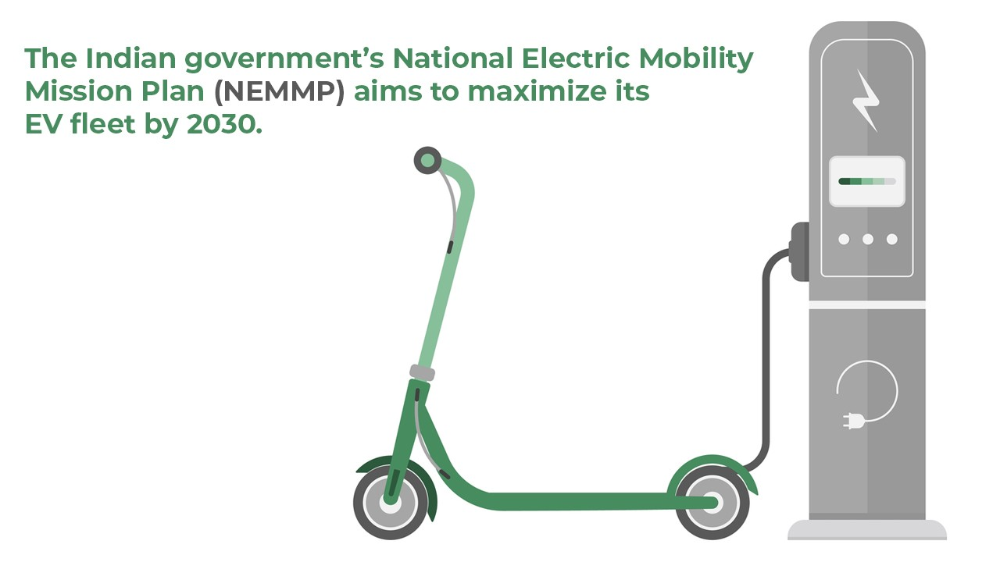
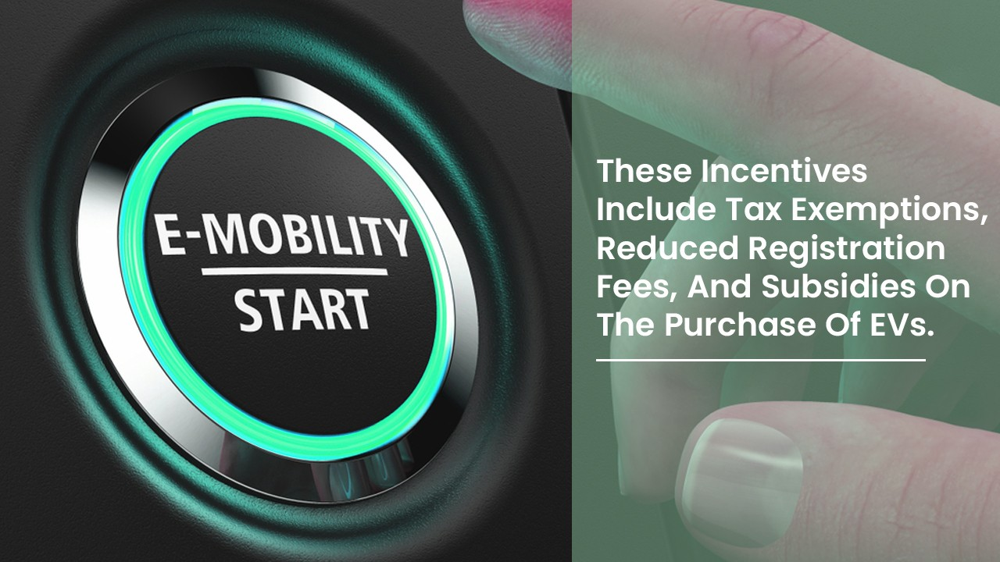
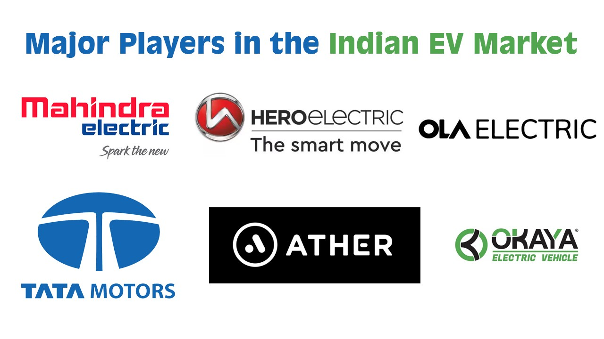
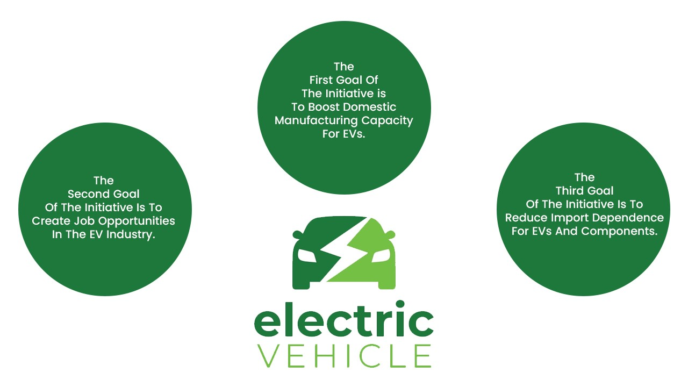
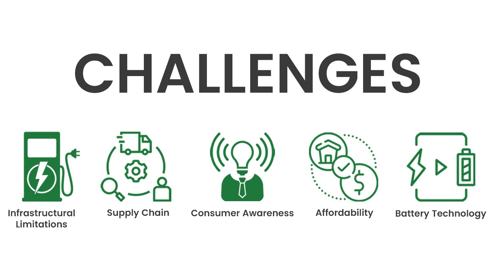

Introduction
Electric mobility, or E-mobility for short, has been growing at a rapid pace worldwide in recent years. As people become more aware of the impact of traditional fossil fuel vehicles on the environment, they are turning towards electric vehicles (EVs) as a cleaner and more sustainable alternative.
The growth of E-mobility has been particularly significant in countries such as China, Norway, and the United States, where government policies and incentives have encouraged the adoption of EVs. India has recognized the importance of E-mobility and has taken steps to promote its adoption. The Indian government’s National Electric Mobility Mission Plan (NEMMP) aims to maximize its EV fleet by 2030. To achieve this goal, the government has provided incentives for manufacturers and buyers of EVs, including tax exemptions and subsidies.

The significance of E-mobility in India cannot be overstated. With a population of over 1.3 billion people, India is one of the largest consumers of fossil fuels in the world. This has led to high levels of air pollution in many Indian cities, causing serious health problems for millions of people. By promoting E-mobility, India can reduce its dependence on fossil fuels and improve air quality.
Government Initiatives for E-Mobility
The Indian government has been taking various initiatives and policies to promote the use of electric vehicles (EVs) in the country. The aim is to reduce carbon emissions and dependency on fossil fuels and to encourage the use of sustainable transportation.
One of the key initiatives introduced by the government is the Faster Adoption and Manufacturing of Hybrid and Electric Vehicles (FAME) schemes. This scheme provides financial incentives to manufacturers and buyers of EVs. The scheme also aims to encourage the development of charging infrastructure in the country.

Another important policy introduced by the government is the National Electric Mobility Mission Plan (NEMMP). This plan aims to promote the use of EVs in the country and to make India a global leader in EV technology. The plan focuses on creating a conducive environment for the manufacture and adoption of EVs in India.
To encourage more people to buy EVs, the government has also introduced incentives and subsidies for EV buyers. These incentives include tax exemptions, reduced registration fees, and subsidies for the purchase of EVs.
The government is also working on developing charging infrastructure in the country. Various charging infrastructure development programs have been launched to promote the installation of charging stations across the country. This will help address one of the major concerns of EV buyers, which is the availability of charging infrastructure.
Major Players in the Indian EV Market
Profile prominent companies and organizations contributing to the growth of E-mobility in India:

India is making significant strides in the field of electric mobility, with several prominent companies and organizations contributing to its growth. Among these, Tata Motors stands out as a leader in the EV segment, offering vehicles like the Nexon EV that are both efficient and affordable.
Mahindra Electric is another notable player in the space, having pioneered EV manufacturing with the XUV 400 EV and eKUV100. These vehicles have been well-received by consumers, who appreciate their low operating costs and environmental benefits.
Hero Electric, meanwhile, is focused on electric two-wheelers for urban mobility. With cities becoming increasingly congested, these vehicles offer a practical and eco-friendly alternative to traditional gas-powered scooters and motorcycles.
Ola Electric is also emerging as a major player in the electric scooter market. The company has already launched its first product, the Ola S1, which boasts impressive specs and features at a competitive price point.
The Indian government has also been actively collaborating with international companies like Tesla to promote the adoption of electric vehicles. Such collaborations are crucial for developing the necessary infrastructure and technology to support the growth of the EV market in India.
Make in India Scheme and EV Manufacturing Goals
The 'Make in India' initiative was launched in 2014 by the Indian government with the aim of promoting domestic manufacturing and boosting economic growth. The initiative has been successful in attracting foreign investment and creating job opportunities in various sectors, including the electric vehicle (EV) industry.

The EV sector is a key focus area under the 'Make in India' scheme, as the government aims to reduce import dependence on EVs and components and boost domestic manufacturing capacity. The goals and targets set by the government for manufacturing EVs under the scheme are ambitious and aim to position India as a leading player in the global EV market.
The first goal of the initiative is to boost domestic manufacturing capacity for EVs. To achieve this, the government has announced several measures such as providing incentives for setting up EV manufacturing plants, reducing taxes on EVs and components, and promoting research and development in the sector. These measures have led to an increase in the number of EV manufacturing plants in India, which has helped to create new job opportunities and boost economic growth.
The second goal of the initiative is to create job opportunities in the EV industry. The government has identified the EV sector as a key area for job creation and has announced several measures to promote employment in the sector. These measures include providing training and skill development programs for workers in the EV industry, promoting entrepreneurship in the sector, and encouraging foreign companies to set up their manufacturing plants in India.
The third goal of the initiative is to reduce import dependence on EVs and components. India currently imports a significant portion of its EVs and components from other countries, which makes it vulnerable to fluctuations in global markets. To reduce import dependence, the government has announced several measures such as providing incentives for domestic production of EVs and components, reducing taxes on locally manufactured products, and promoting research and development in the sector.
Challenges and Future Outlook
Challenges faced by the Indian E-mobility sector:
The Indian E-mobility sector has been facing several challenges, hindering its growth and adoption. Among these challenges are infrastructural limitations, affordability and consumer awareness, and battery technology and supply chain constraints.

Infrastructural limitations are one of the major challenges that the Indian E-mobility sector is facing. The lack of charging infrastructure has been a major roadblock in the adoption of electric vehicles (EVs). The current charging infrastructure is limited and not easily accessible, which has resulted in a range of anxiety among potential EV buyers. To overcome this challenge, the government needs to invest in building a robust charging infrastructure network across the country. This will not only encourage the adoption of EVs but also create employment opportunities in the sector.
Affordability and consumer awareness are other significant challenges faced by the Indian E-mobility sector. The high upfront cost of EVs is a major deterrent for potential buyers. Additionally, many consumers are not aware of the benefits of EVs, such as lower maintenance costs and reduced carbon emissions. To address this challenge, the government needs to incentivize the purchase of EVs through tax benefits and subsidies. Moreover, awareness campaigns should be conducted to educate consumers about the benefits of EVs.
Battery technology and supply chain constraints are also major challenges faced by the Indian E-mobility sector. The lack of a robust battery manufacturing ecosystem in India has resulted in a heavy dependence on imports, making EVs expensive. To overcome this challenge, the government needs to promote domestic manufacturing of batteries and other critical components. This will not only reduce the cost of EVs but also create job opportunities in the sector.
Conclusion
In conclusion, the Indian Government has played a crucial role in promoting e-mobility in the country. The government has implemented various policies and initiatives such as the Faster Adoption and Manufacturing of Hybrid and Electric Vehicles (FAME) scheme, which provides incentives for the purchase of electric vehicles and the establishment of charging infrastructure. Additionally, the government has also introduced tax exemptions and reduced GST rates on electric vehicles to encourage their adoption. These efforts have led to an increase in the production and sales of electric vehicles in the country. However, there is still a long way to go in terms of creating a robust charging infrastructure and addressing the high cost of electric vehicles. The government needs to continue its efforts and work closely with industry stakeholders to ensure that e-mobility becomes a mainstream mode of transportation in India.